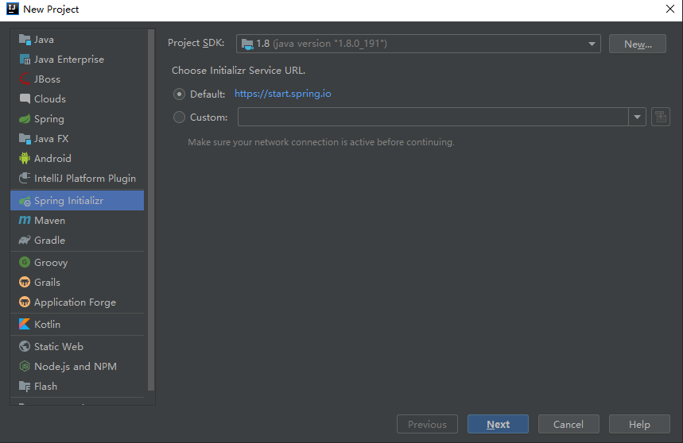
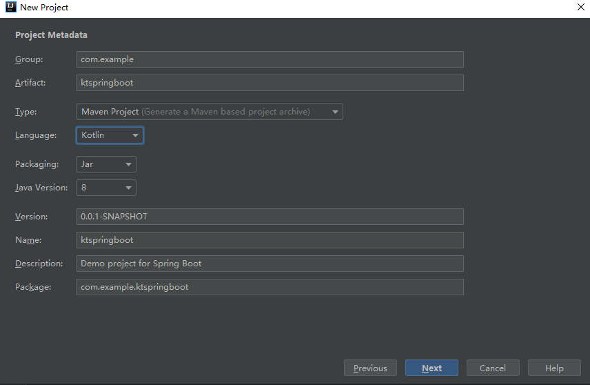
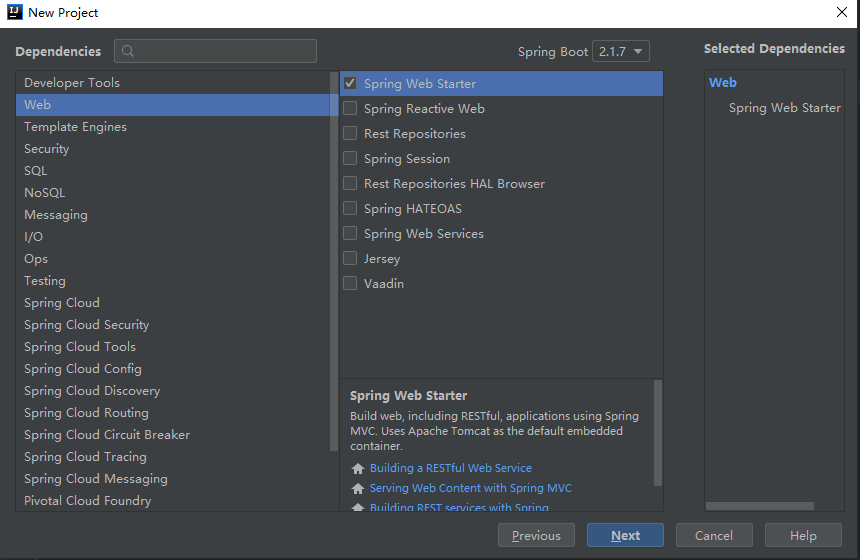
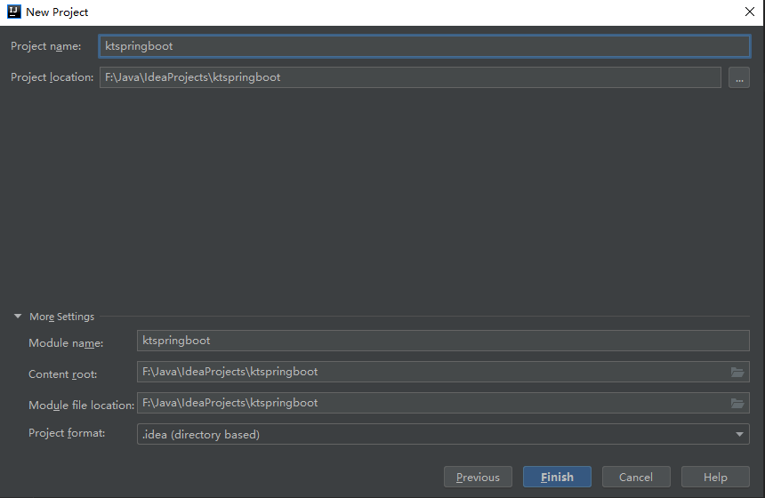
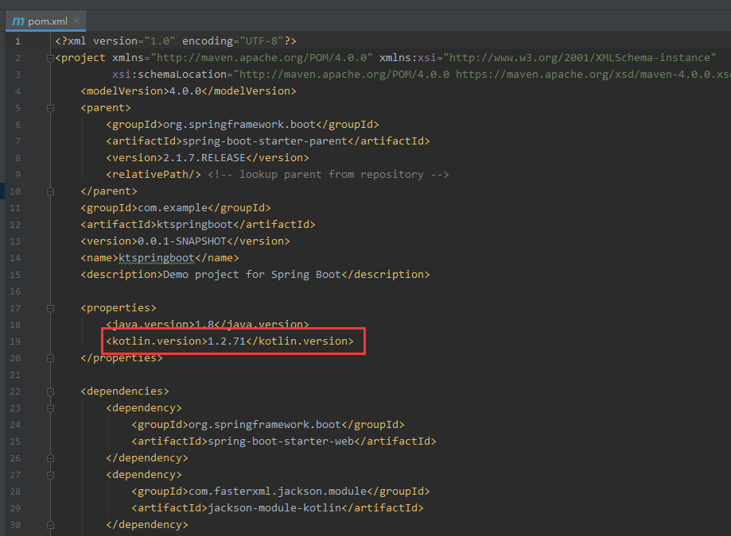
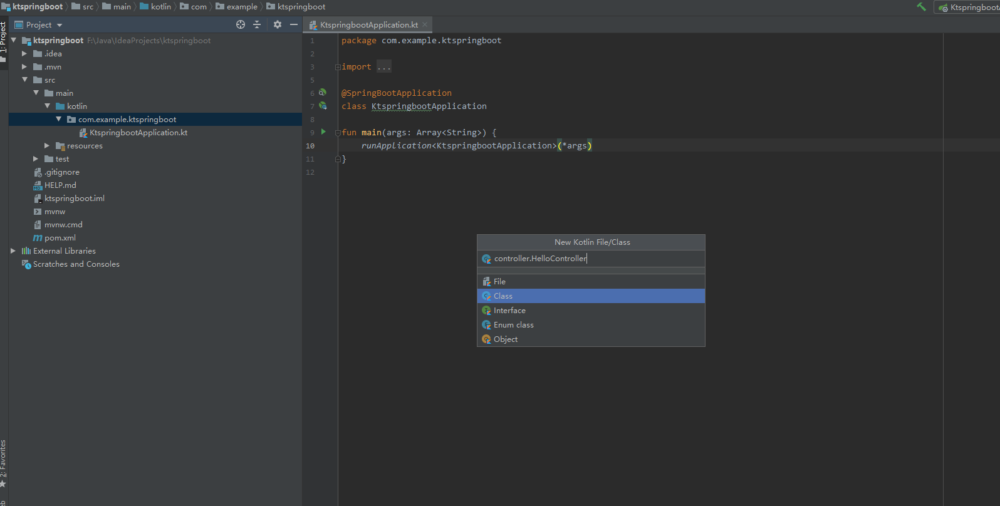
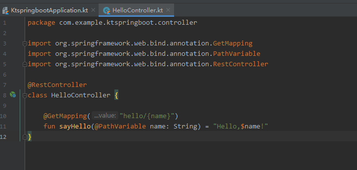

为什么写这篇文章
Spirng Boot 应该算是当下最流行的 j2ee 开发框架了，但目前大多数都是 java 版本的。上手 kotlin 时间虽然不久，但我确实明显感觉到 kotlin 这门语言带来的方便性，毕竟 jetbrains 那群人开发 kotlin 的时候是更多的是从开发者的角度出发，而 java 感觉有更多的学术研究方面的考虑和历史遗留的问题，所以用起来有时候并不是那么顺手。且不论 kotlin 是不是 “a better java”，单独作为一门编程语言来说，花个一天时间学习一下体验下还是不错的，况且还有 “100% interoperable with java” 呢，不会影响以前的代码hahaha~（等等，这篇文章好像不是来推销 kotlin 的啊）
言归正传，这篇文章将指引你如何用 kotlin 搭建一个基础的 SpringBoot 项目，适合想学习 kotlin 或者想感受一下用 kotlin 写 server 端代码是什么样的体验的朋友们观看。
下面正式开始
一、开发环境
- idea
- jdk
首先，开始安装 idea%$^*() ￥%……&#￥%blablabla……
开个玩笑嘿嘿， idea 都不会装没必要看这篇文章了啊魂淡！
二、使用 Spring Initializer 创建项目
把环境都装好后选择 new project 后进入如下界面，选择 Spring Initializer 后点击 Next

这里 Group 和 Artifact 可以改成自己想要的名字，Language 选择 Kotlin，如果想把应用打成 war 包的话 Packaging 要选择 War，继续点击 Next （什么，你还不知道 war 和 jar 是干嘛的？去百度！！！）

把 Web 里面的 Spring Web Starter 勾上后点击 Next

这里设置项目名和项目生成路径后点击 Finish，这样，Idea 就会自动为我们开始创建项目啦。（如果首次安装的话可能要经历 Idea 为我们自动下载所有 dependency 的漫长阶段~）

在主界面如果看见这个提示可以选择 Enable Auto-Import，这样每次在 pom.xml 里添加依赖的话 idea 会自动去下载相应的 dependency。当然不嫌麻烦的话也可以手动让 idea 去下载依赖－_－b
三、相关配置
首先打开 pom.xml，最好把 kotlin 的版本改成 idea 当前 kotlin 插件的版本

然后点击 idea 右上角的绿色箭头，这样一个基于 kt 的 springboot 项目就跑起来了（好了大家下期再见嘿嘿嘿~）
就这？？？
开个玩笑，要是这么简单就结束了谁知道是不是真正的跑起来，而且这样跑起来有什么用嘛。
接下来就是创建 controller 用于测试是否真的跑起来并且能用了。

编写这个 controller 的代码，创建一个 restful 风格的接口

重新点击 run，等项目运行起来后，打开浏览器输入 http://localhost:8080/hello/zhangsan，就可以在浏览器上看到 “Hello，zhangsan!”，说明我们的 SpringBoot 项目真正跑起来来啦！
以上就是最基础的一个基于 Kotlin 的 SpringBoot 项目，后续可以在这个基础框架上加上各种如连接数据库、集成 SpringCloud 等等功能，可以在 Spring 官网查看相关说明，想要学习的小伙伴可以先去看看，以后我也会慢慢写一些集成各种功能的相关教程（咕咕），嘿嘿，这篇文章也就到此为止啦，我们有缘再见！